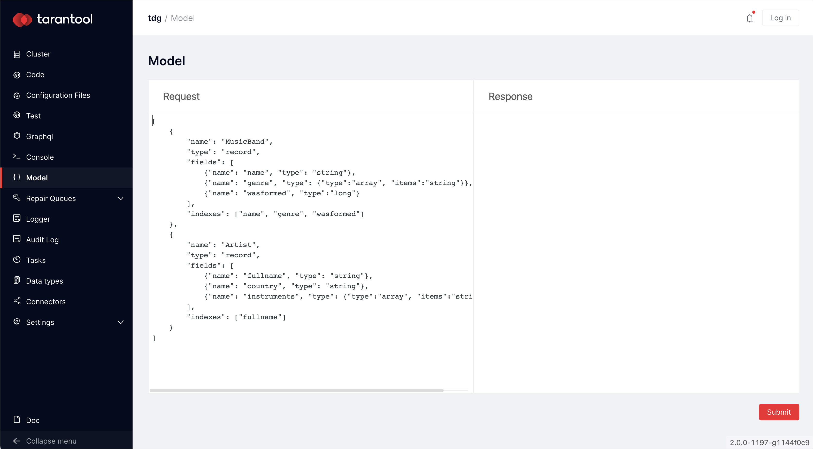
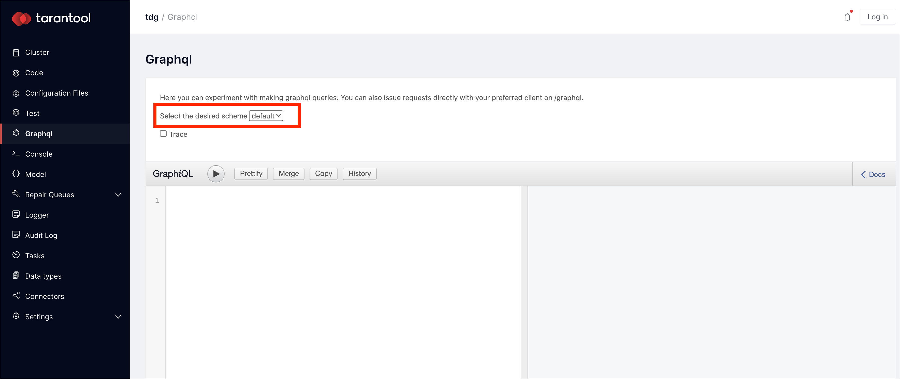
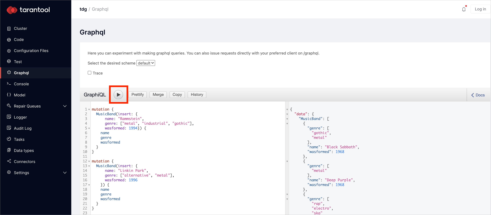
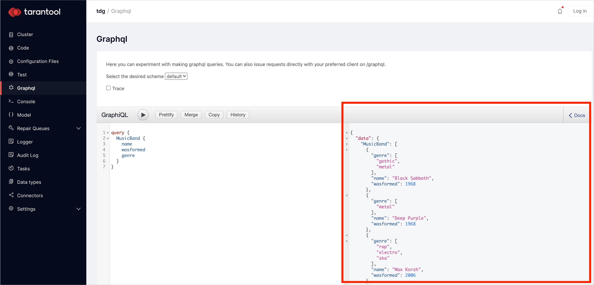
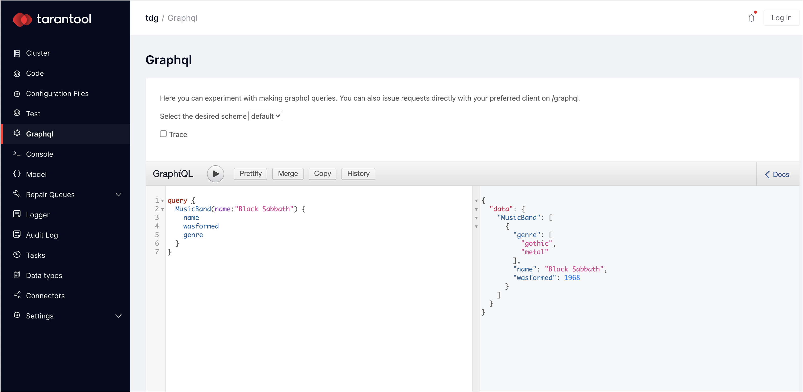
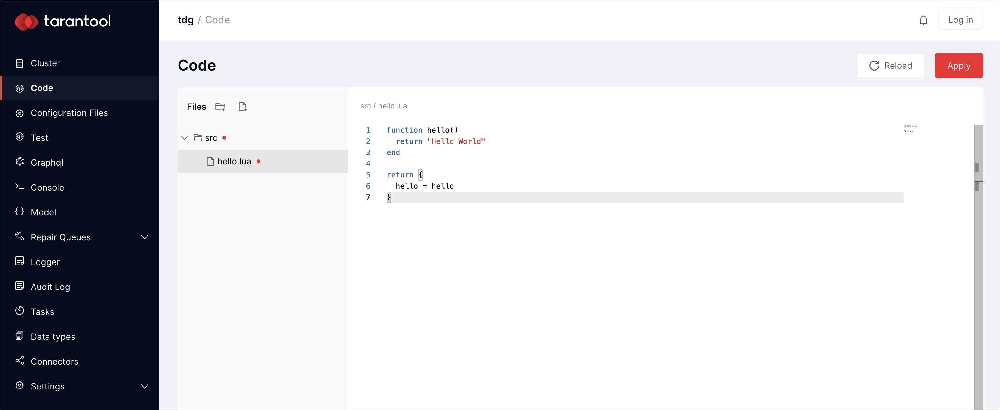
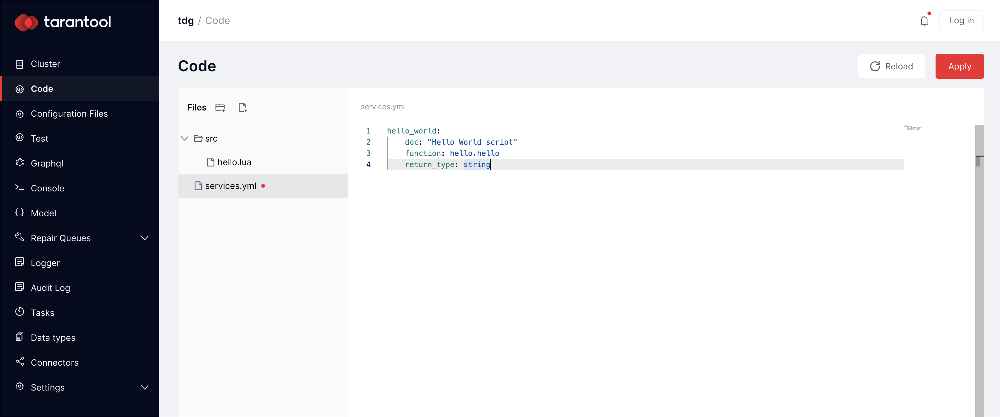
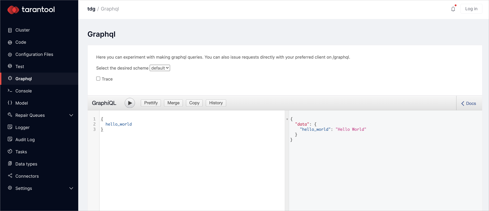
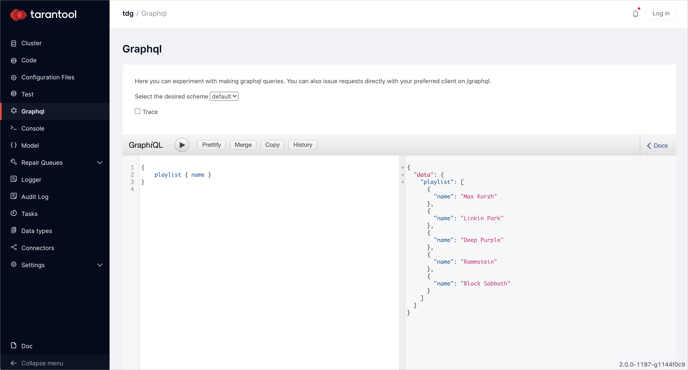

Hello world with Lua¶
This guide explains how to set up a data model, run data queries, and write a couple of stored procedures in Lua.
First, you will need a running TDG instance. You can run TDG as a Docker container, or deploy it on your machine manually or with Ansible.
Then you will learn how to:
Setting up the data model¶
This guide uses a data model that contains two types of objects: music bands and artists. Each music band has a name, a genre, and a year it was formed. Artists have a name, a country, and the instruments they play.
Here is an example of such a model:
[
{
"name": "MusicBand",
"type": "record",
"fields": [
{"name": "name", "type": "string"},
{"name": "genre", "type": {"type":"array", "items":"string"}},
{"name": "wasformed", "type":"long"}
],
"indexes": ["name", "genre", "wasformed"]
},
{
"name": "Artist",
"type": "record",
"fields": [
{"name": "fullname", "type": "string"},
{"name": "country", "type": "string"},
{"name": "instruments", "type": {"type":"array", "items":"string"}}
],
"indexes": ["fullname"]
}
]
In the menu on the left, there is a tab called Model. Switch to this tab and paste the model to the Request field. Click Submit:
You have set up the data model. Now you can upload, select, and delete data.
Uploading data to TDG¶
In the menu on the left, there is a tab called GraphQL. Switch to this tab, select default as the desired scheme, and clear the request field:
Paste the following data to the request field:
mutation all {
rammstein:MusicBand(insert: {
name: "Rammstein",
genre: ["metal", "industrial", "gothic"],
wasformed: 1994}) {
name
genre
wasformed
}
linkinpark:MusicBand(insert: {
name: "Linkin Park",
genre: ["alternative", "metal"],
wasformed: 1996}) {
name
genre
wasformed
}
blacksabbath:MusicBand(insert: {
name: "Black Sabbath",
genre: ["gothic", "metal"],
wasformed: 1968}) {
name
genre
wasformed
}
deeppurple:MusicBand(insert:{
name: "Deep Purple",
genre: ["metal", "rock"],
wasformed: 1968}) {
name
genre
wasformed
}
maxkorzh:MusicBand(insert:{
name:"Max Korzh",
genre:["rap", "electro"],
wasformed: 2006}) {
name
genre
wasformed
}
}
Execute query by clicking the play button:
The data is now uploaded.
Running data queries¶
Reading data¶
You can read data in the Graphql tab. Make sure the default scheme is switched on, clear the field on the left, and write a request that selects every music band:
query {
MusicBand {
name
wasformed
genre
}
}
Click the play button. In the right field, you’ll get the result:
Select data by the primary key:
query {
MusicBand(name:"Black Sabbath") {
name
wasformed
genre
}
}
After clicking the play button, you will get all stored information about the Black Sabbath music band:
Changing data¶
Add one more music genre to one of the music bands. In the GraphQL tab, insert the data about the band with two genres instead of one:
mutation {
MusicBand(insert:{
name: "Deep Purple",
genre: ["metal", "rock"],
wasformed: 1968}) {
name
genre
wasformed
}
}
Click the play button. The information about the Deep Purple music band is now updated.
Deleting data¶
In the GraphQL tab, write the query to delete all data about one of the music bands:
mutation {
MusicBand(name:"Linkin Park" delete:true) {
name
genre
wasformed
}
}
Click the play button. You’ve deleted the data about the Linkin Park music band.
Writing stored procedures¶
Hello World¶
In the menu on the left, there is a tab called Code.
Switch to the tab and create the src directory.
In the src directory, create the hello.lua file, which is a Lua module that exports the functions:
function hello()
return "Hello World"
end
return {
hello = hello
}
Click Apply:
This Lua module requires a GraphQL interface.
In the Code tab, create a file called services.yml and specify the signature of the GraphQL call:
hello_world:
doc: "Hello World script"
function: hello.hello
return_type: string
Click Apply:
The code is validated and uploaded to the cluster. If there is an error, a notification at the bottom right corner will give you the details about it.
Now switch to the Graphql tab, select default the desired scheme, and call the stored procedure:
{
hello_world
}
In the right field, you’ll get the result:
Randomized playlist¶
In the dataset, there are various music bands. Make a stored procedure to give you a randomized playlist.
In the Code tab, open the src directory and create a file called playlist.lua.
This file defines the logic to generate a randomized playlist:
local repository = require('repository')
function shuffle(tbl)
for i = #tbl, 2, -1 do
local j = math.random(i)
tbl[i], tbl[j] = tbl[j], tbl[i]
end
return tbl
end
function playlist()
local result = repository.find("MusicBand", {})
result = result or {}
shuffle(result)
return result
end
return {
playlist=playlist
}
In the services.yml, specify the signature of the GraphQL call:
playlist:
doc: "Return randomized playlist"
function: playlist.playlist
return_type: {"type":"array", "items":"MusicBand"}
Switch to the GraphQL tab and run this command:
{
playlist { name }
}
Click the play button. As a result, you’ll get a randomized playlist:
Each time you click the play button, you’ll get a different playlist.